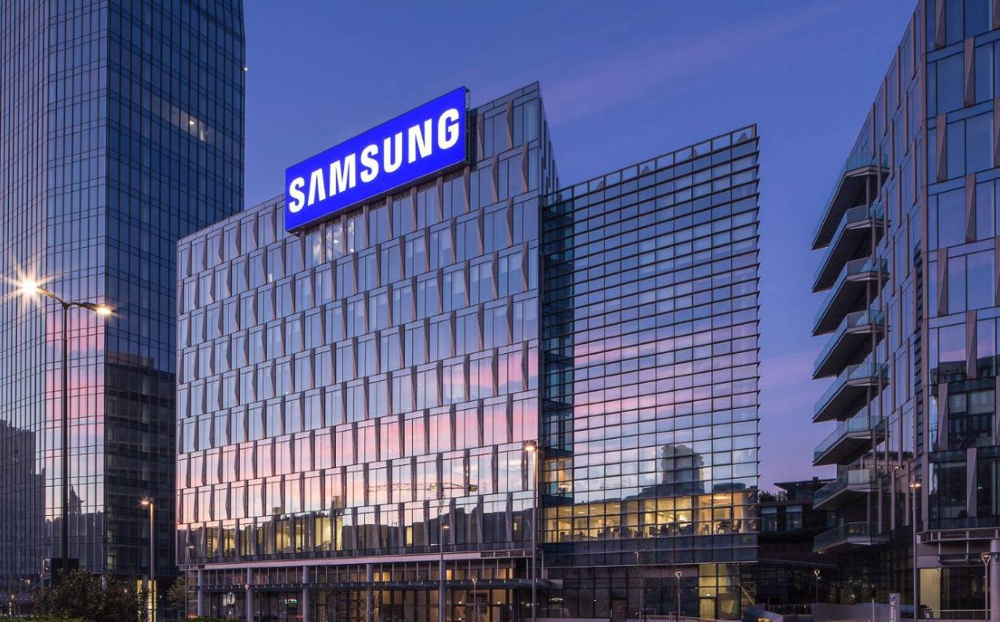

¿Quienes somos?
Samsung es una de las compañías más grandes del mundo, con décadas de crecimiento en varios sectores del mercado, que van desde los electrodomésticos hasta los teléfonos celulares. Nacida en Corea, ha logrado posicionarse como un referente global en sus 85 años de historia.24
¿Cuales son nuestros objetivos?
Samsung se compromete a cumplir con las leyes y las regulaciones locales, así como a aplicar un código de conducta estricto y global para todos los empleados. Cree que la gestión ética no solo es una herramienta para responder a los cambios rápidos en el entorno empresarial a nivel mundial, sino también una forma de generar confianza con sus diversas partes interesadas, lo que incluye clientes, accionistas, empleados, socios comerciales y comunidades locales. Samsung tiene el objetivo de convertirse en una de las empresas más éticas del mundo, por eso continúa capacitando a sus empleados y operando sistemas de monitoreo, mientras pone en práctica una gestión corporativa justa y transparente.
